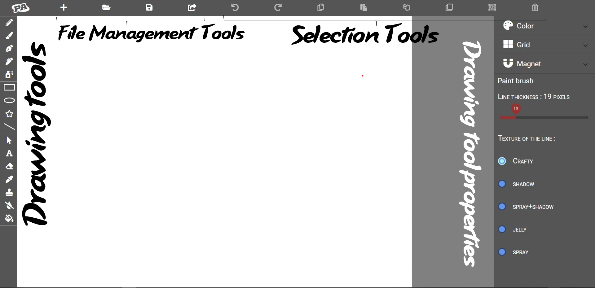

<mat-toolbar class="toolbar">
    <a><i class="fab fa-penny-arcade"></i></a>
    <h1 mat-dialog-title style="font-size: 40px;font-family: unset;"> Poly Artist </h1>
    <button class="btn-dialog-close" mat-raised-button tabIndex="-1" (click)="closeModal()">
      <mat-icon> clear </mat-icon>
    </button>
</mat-toolbar>
<mat-horizontal-stepper labelPosition="bottom" #stepper>
    <mat-step>
        <ng-template matStepLabel>Introduction</ng-template>
        <div mat-dialog-content>
            <h4> This project was developped and designed during 3 months: </h4>
            <div>includes various kinds of tools and pencils, in addition to a range of shapes to help you draw</div>
        </div>
        <br>
        <div class="form-check">
            <h4>You can reopen this dialog when clicking on the logo.</h4>
            <mat-checkbox class="NotShow" (click)="onClickCheckbox()">Do not show this message again </mat-checkbox>
        </div>
        <div>
            <button mat-button (click)="closeModal()">Skip </button>
            <button mat-button matStepperNext>Next</button>
        </div>
    </mat-step>
    <mat-step>
        <ng-template matStepLabel>Features </ng-template>
        <h2> Draw like an artist ! </h2>
        <h3> Saving and opening drawings from the cloud, a database and locally on your computer.</h3>
        <h3> Implementing 15 drawing tools and their manipulations.</h3>
        <div> </div>
        <div class="buttonFeature">
            <button mat-button matStepperPrevious>Back</button>
            <button mat-button matStepperNext>Next</button>
        </div>
    </mat-step>
    <mat-step>
        <ng-template matStepLabel>Tutorial </ng-template>
        <h4> Process : </h4>
        <h4> 1. Create ( or open) a drawing.</h4>
        <h4> 2. Specify the dimensions and the color of the background (in 3 formats : RGBA, Hexadecimal and from a color picker).</h4>
        <h4> 3. Choose the tool and its specifications.</h4>
        <h4> 4. Draw.</h4>
        <h4> 5. Save the file locally or on the database or on the cloud.</h4>
        <h4> 6. Export the file on your computer (optional). </h4>
        <div class="buttonTutorial">
            <button mat-button matStepperPrevious>Back</button>
            <button mat-button matStepperNext>Next</button>
        </div>
    </mat-step>
    <mat-step>
        <ng-template matStepLabel>Template </ng-template>
        <h4> A preview before starting : </h4>
        
        <div>
            <button mat-button matStepperPrevious>Back</button>
            <button mat-button matStepperNext>Next</button>
        </div>
    </mat-step>
    <mat-step>
        <ng-template matStepLabel>Shortcuts </ng-template>
        <h2> the project implements the default shortcuts.</h2>
        <h2> Each shortcut appears while hovering your mouse on the tool.</h2>
        <div class="shortcuts">
            <button mat-button matStepperPrevious>Back</button>
            <button mat-button matStepperNext>Next</button>
        </div>
    </mat-step>
    <mat-step>
        <ng-template matStepLabel>About the Project </ng-template>
        <h2> This project was developped during 3 months. </h2>
        <h2> We applicated the Agile method and coded with the MEAN stack.</h2>
        <h2> There was 4 sprints from September to December.</h2>
        <div class="projectButton">
            <button mat-button matStepperPrevious>Back</button>
            <button mat-button matStepperNext>Next</button>
        </div>
    </mat-step>
    <mat-step>
        <ng-template matStepLabel> Credits </ng-template>
        <h2> Project made by : </h2>
        <h3 class="name"> Souhaila Mellouk</h3>
        <h3 class="name"> Mourad Younes</h3>
        <h3 class="name"> Lynn Chararbsissy</h3>
        <h3 class="name"> Thibault Meston</h3>
        <h3 class="name"> Senda Ben Salem</h3>
        <h3 class="name"> Mohamed Khairallah Gharbi</h3>
        <div class="credits">
            <button mat-button matStepperPrevious>Back</button>
            <button mat-button (click)="stepper.reset()">Reset</button>
            <button mat-button (click)="closeModal()">Skip </button>
        </div>
    </mat-step>
</mat-horizontal-stepper>
